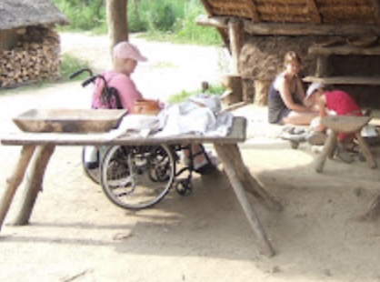
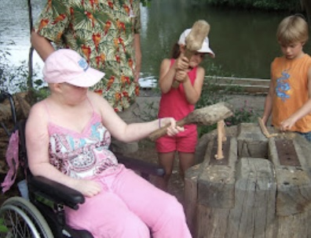

Awesome
26 May 2007
That’s what my daughter said over and over when her dad and stepmom called to tell her they’re coming over again on June 5—and bringing her baby sister with them.
She was very sad her little sister didn’t come last time. And in the past two weeks she’s mentioned four times that she doesn’t want to die without seeing her father, stepmother, and sister again. We passed that along to them, and they booked a flight!
It totally made her day.
Incontinence?
27 May 2007
My daughter just wet her bed. It may be a fluke, or it may be a new phase. We shall see.
Au Naturel
29 May 2007
We had several visitors today, among them our family doctor. Last week Dr. Baars posed several intense questions; our daughter answered them today. She wants minimal pain, even if it means she is less wakeful. She does not want any interventions that postpone her death. If she can no longer eat or drink, so be it; no IV fluids or tube feeding.
Harry Potter
30 May 2007
Our friend Elise contacted the Dutch branch of the Make-A-Wish Foundation on behalf of my daughter. Two very nice volunteers came yesterday to get my daughter’s wish. Alas, it turns out she’s not eligible since she already had a wish in the US. That sounds perfectly reasonable to me, but it’s kind of a bummer. We’d thought up a wish that we really can’t make happen ourselves.
My daughter has been an avid fan of Harry Potter since the first book appeared in 1997. Harry Potter part 7 will be released on July 21, 2007. It looks very unlikely that my daughter will be in a position to read it then (if we could manage to be among the lucky crowd who gets a copy right away). So she wished for a (supertopsecret and totally not shared with anybody else) copy of the book now, with a dedication and signature from J.K. Rowling herself.
Any miracle workers out there?
Five Weeks In
1 Jun 2007
It’s been five weeks since my daughter woke with extreme confusion and aphasia, indicating fluid buildup caused by tumor growth. It’s been almost two weeks since her last MRI, which vividly illustrated just how quickly the tumor’s growing.
This week, she’s been briefly dizzy from time to time. She twice mentioned a slight difficulty breathing, both times while lying down. She comments more frequently that she’s tired, though she’s not yet sleeping during the day. She did cut a game of 10,000 short last night around 8:30, however, so she could go to bed. That’s pretty shocking: her grandparents and best friend Charlotte were here and it was a lively 6-person game. She’d have been in heaven if she hadn’t been so tired.
She has discovered tomato Cup-A-Soup and eats it at least four times a day.
Prehistoric Cookies
3 Jun 2007
We visited the Eindhoven Historic Open-Air Museum today. There were lots of kid activities in the prehistoric village: slamming rough-hewn wood blocks through round holes to shape them for building pins, grinding wheat to bake grain-and-water cookies, gliding over the water in a hollowed-out tree trunk canoe.
 
There was also a passel of young ducks under the care of a mother goose.
We’re not sure what crime they committed, but the kids ended up having to do some hard time in the medieval village.
Recent Events
Last Sunday we did Dutch gourmet (say “gore-MET”; think grilling all kinds of meats and vegetables in tiny little pans at the table).
Last Wednesday the girls made cheese twists. Quite tasty, and fun to make.
Last Thursday the youngest two participated in the school sponsor run to raise money for new playground equipment. We had a respectable cheering section with Oma, Opa, and Charlotte in tow.
A Few Hours’ Extra Wait
5 Jun 2007
My daughter’s father, stepmother, and baby sister have arrived in Eindhoven. Alas, the original plan for us to drop her off at their hotel at 2:00 PM has been changed to a dinnertime date. They’re tired and the one-year-old is cranky, not having slept on the plane.
We’ve agreed to drop off and pick up our daughter each day at their hotel so they are spared the hassle of bussing it with a toddler. The total visit will be short; they are saying goodbye on Saturday, which we recently discovered means they are spending the weekend close to the airport (at Charlotte’s home, in fact) and doing some sightseeing in Amsterdam on Sunday before flying out Monday morning.
Let’s hope it’s a good visit, filled with quality time together. Our daughter has so been looking forward to it. It’s most probably the last time they’ll see each other.
Morbid Humor
5 Jun 2007
My daughter and I have had some good belly laughs lately at the expense of her prognosis.
Her: Ooooh, I want an ice cream.
Me: But we’ve just had a lot of junk food. No ice cream.
Her: But it’s a perfect day for ice cream.
Me: Nope.
Her: Just a little one? A teensy weensy little ice cream?
Me: No way José.
Her (mock tragic): But I’m dying.
Me: And if you keep whining about ice cream, you may just die a little sooner.
Her (about her midday pills): Hey, are you trying to kill me with this stuff?
Me: Yep. And it seems to be working pretty well.
Fuse Bead Frenzy
6 Jun 2007
There are 41 fuse bead creations in this photo; my daughter’s made a few more that she’s given away.
My husband and I, ever the number crunchers, worked out what this means in time spent.
There are roughly 400 beads per design (large squares have approximately 800; small squares have approximately 200). My daughter places one bead roughly every 5 seconds.
45 creations * 400 beads / creation = 18,000 beads
18,000 beads * 5 seconds / bead = 90,000 seconds
90,000 seconds = 25 hoursSo my daughter’s spent 25 hours making fuse bead designs. She’d have made many more, I suspect, if her mother would iron the darn things at any kind of reasonable pace: she runs out of bead boards and has to wait on me. And I do so love ironing.
No Harry Yet
6 Jun 2007
Several people have gone all out to help us get Meg a copy of the seventh and last Harry Potter book before its release on July 21 (and a very massive thanks to all of you). At least two have contacted the publisher, Bloomsbury, and been gently turned down:
Tragically, we are receiving many requests like yours from around the world and unfortunately there is nothing we can do to help. There is no way that we can get books before July 21 st. The books have to be made available to everybody at the same time so as not to spoil the excitement for children and fans all over the world. I’m sorry we can’t help.
Honestly, I completely understand this. How many English-speaking children of Harry-Potter-reading age have a life-threatening illness right now? One source estimates that one child per 1,000 is living with a life-threatening illness. That’s roughly 60,000 children in the US alone, perhaps half of whom are avidly awaiting the next Harry Potter book. Add in children in England, Australia, and Canada, and you’ve got a potential demand for special treatment that just can’t be met.
Even if my daughter were the only one requesting an early copy, I understand why they won’t send her one. We’ll sign NDA and indemnity forms out the wazoo promising not to reveal the plot, but that doesn’t mean it won’t leak out. The publisher, being in the business of maximizing book sales, can’t take that chance, and we can’t adequately guarantee it won’t happen: we’d have to ban all visitors and lock the book in a vault. I imagine we might still be beseiged round the clock with unwelcome company trying to wheedle, sneak, or otherwise worm its way in and get a look at that book.
But the fact remains that my daughter will likely be gone before July 21. This is the very last Harry Potter book; there’s something comforting about her getting to read it before she dies, getting to complete her journey alongside Harry. She’s one of the kids J.K. Rowling writes about on her website:
I want the readers who have, in many instances, grown up with Harry, to embark on the last adventure they will share with him without knowing where they are going . . .
This quote gets me misty-eyed for purely personal reasons; it will be the last adventure my daughter will share with Harry (if indeed she gets to share it with him) because she’s dying.
Let’s not give up yet; who knows what might be possible. As the proverb (nearly) goes, many roads lead to Rome.